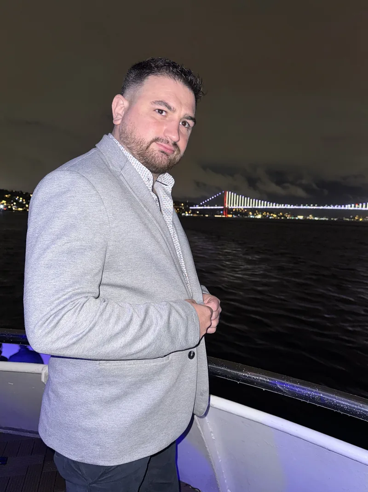
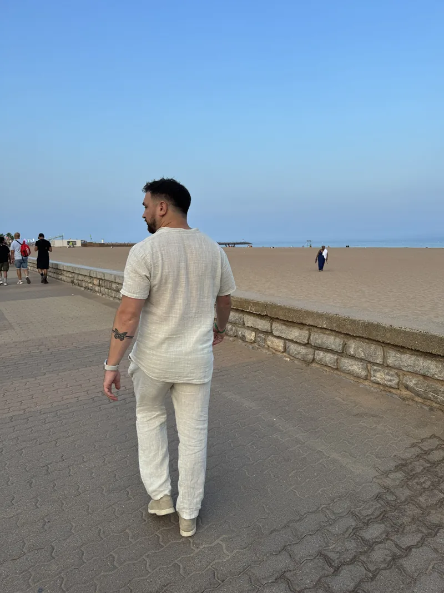
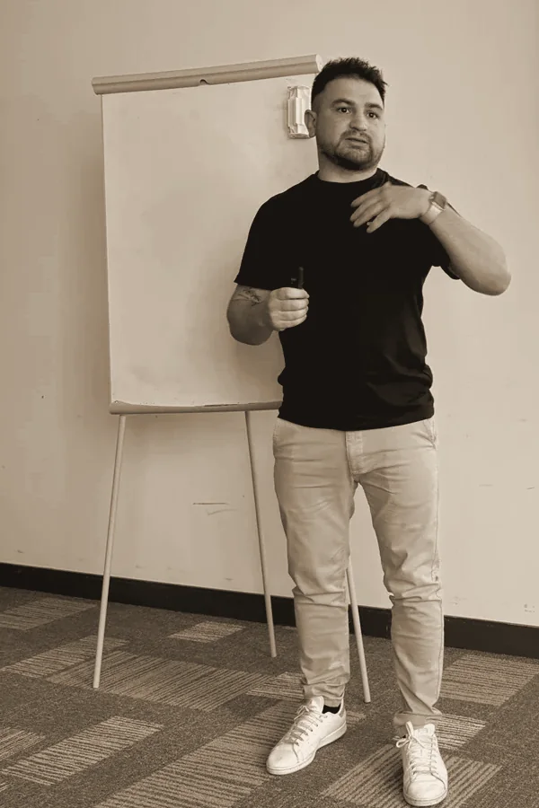
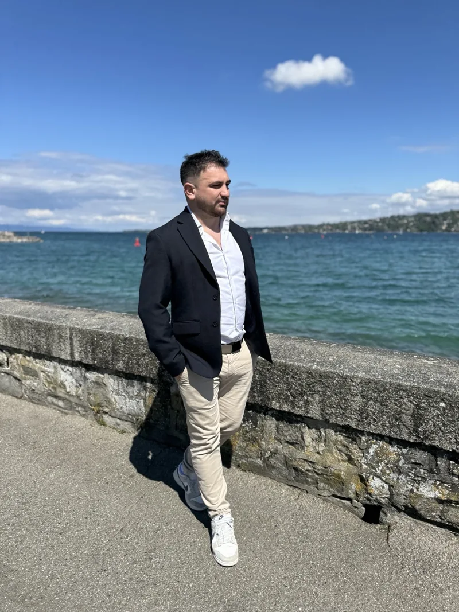

Banquier le jour.Entrepreneurle soir.
Le voyage fait partie de ma vie.
L’entrepreneuriat aussi.
Depuis 2021, je développe une activité autour du voyage en parallèle de mon emploi. Je partage les services que j’utilise et j’accompagne ceux qui veulent se lancer.
On en parle ? Découvrir mes activités

Ton prochain
départ.
Les vacances que tu attends.
Le week-end qui ferait du bien.
Le déplacement qui se prépare.
Pour mes réservations, j’utilise une plateforme privée, accessible sur invitation. Je te la fais découvrir à partir de tes envies et de tes besoins, pour tes voyages personnels comme professionnels.
Découvrir une autre façon de réserverEn famille, entre amis ou en solo, découvre aussi les Life Experiences.
Explorer les expériences ↗Ton projet.
On prépare la suite.
Financer une envie. Partir plus souvent.
Retrouver un peu de marge.
Mon activité : recommander un service que j’utilise pour mes propres voyages, et être rémunéré grâce à cette recommandation.
Ton activité. Ton rythme.
Tu apprends à présenter le service avec la formation en ligne. Ensemble, on prépare tes premiers échanges et on fait le point sur ce qui te bloque.
Pas de patron, pas de pression de ma part. L’activité s’adapte à ta vie, pas l’inverse.


Banquier.
Entrepreneur.
Et toujours curieux.
Le jour, je travaille en banque. Le soir, je construis une activité autour du voyage.
J’aime découvrir un endroit, réunir des personnes et voir une idée devenir un projet. C’est ce que je partage ici, et ce que j’ai envie de transmettre à ceux que j’accompagne.
J’ai aussi cofondé le Club Avantages Entrepreneur, qui réunit des dirigeants et des indépendants pour échanger et développer leur réseau.
Me retrouver sur InstagramLa liberté n’est pas réservée à ceux qui semblaient y être destinés.
Guillaume Bru
Qu’est-ce qui
te donne envie ?
Un voyage en tête ou une activité à construire ?
Choisis ce qui t’intéresse. On en parle ensemble.